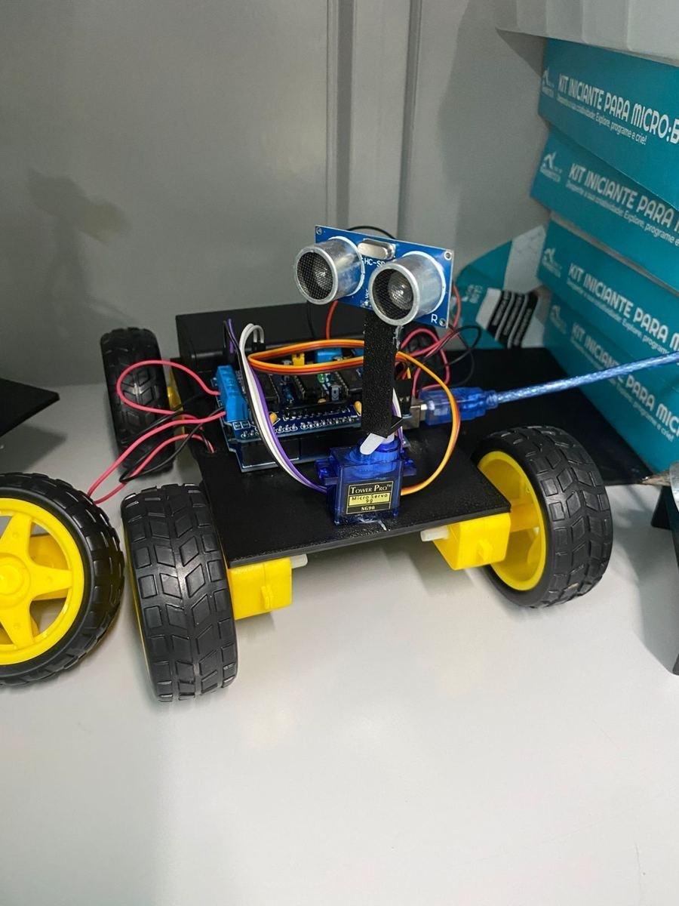

Robótica na Escola Estadual José Bonifácio
Alunos que projetam, montam e programam robôs. Veja o que já criamos e o que vem por aí.
Ver projetos
Últimos projetos
Próximos eventos
Novidades
Fale com a gente
Dúvidas, convites ou ideias? Veja onde fica a escola e envie uma mensagem.
Contato e localização